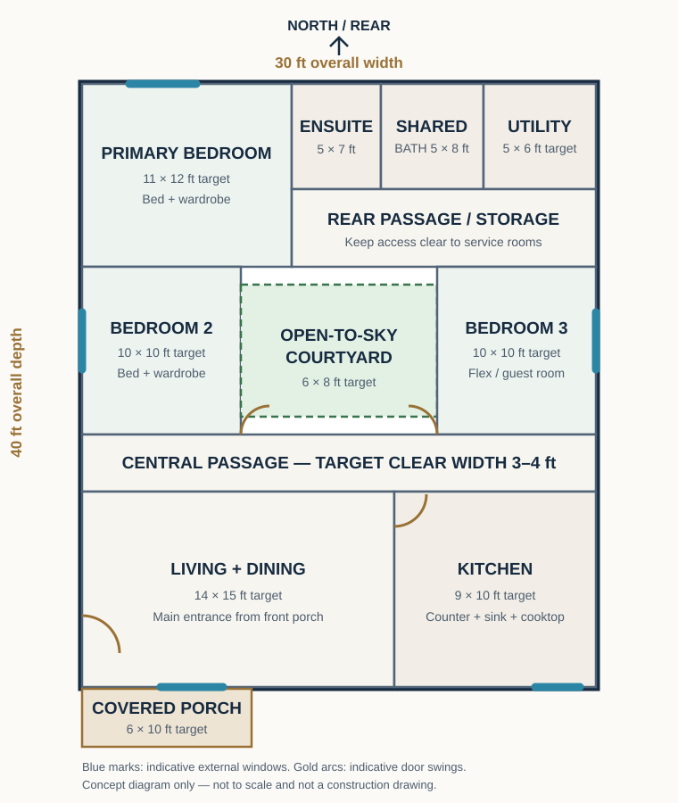

MODERN HOMES · DESIGN GUIDE · 9 NOVEMBER 2026
Modern Courtyard House Design: A 30 × 40-Foot Three-Bedroom Plan
A modern tropical home concept that uses a small open-to-sky courtyard to bring daylight into the middle of the plan, create a private green view and help separate shared family spaces from bedrooms.
1. Design idea and who it may suit
This layout is intended for a household that wants three separate sleeping or flexible rooms without making every shared space face the street. The central courtyard creates an internal outlook and can bring daylight into the circulation zone. It may also provide a small planted feature that can be enjoyed from the living area or passage.
The concept assumes a broadly rectangular plot with enough usable width for a 30-foot building envelope, suitable access from the front and space for required setbacks and drainage. The house is single-storey. A covered porch is shown separately from the 30 × 40-foot main envelope, so the total roofed area will be greater if the porch is included.
A courtyard is not automatically cooler or more private in every climate. Its performance depends on orientation, shade, surrounding buildings, wind, rain exposure, planting and how openings are arranged. Review these conditions on the actual site before committing to the design.
2. Preliminary room schedule
The following dimensions are starting targets for layout development, not guaranteed net internal sizes. They must be reconciled in one coordinated drawing. Wall thicknesses, columns, wardrobes, door swings and circulation reduce the usable area.
| Space | Indicative target | Planning notes |
|---|---|---|
| Living and dining | 14 × 15 ft | Front family space with a compact sofa, dining table and direct route to the courtyard. |
| Kitchen | 9 × 10 ft | Separate work zone with counter, sink, cooktop, refrigerator and ventilation. |
| Primary bedroom | 11 × 12 ft | Double bed, wardrobe and access to a compact ensuite. |
| Bedroom 2 | 10 × 10 ft | Single or compact double bed, depending on furniture selection. |
| Bedroom 3 / flex room | 10 × 10 ft | Guest room, child's room or home office. |
| Shared bathroom | 5 × 8 ft | Toilet, basin and shower zone; confirm fixture clearances. |
| Ensuite | 5 × 7 ft | Compact private bathroom; verify door and shower layout. |
| Laundry / utility | 5 × 6 ft | Washer or wash area, storage and a service opening. |
| Open courtyard | 6 × 8 ft | Open-to-sky planted court, with planned drainage and safe edges. |
| Covered front porch | 6 × 10 ft | Separate from the stated main footprint if it projects beyond the front wall. |
These room targets are not an area schedule that can simply be added together. The designer must fit them within the gross envelope while allowing for walls, passages, storage, structural elements and service routes. If the plan feels crowded, reduce the number of enclosed spaces or enlarge the building envelope rather than forcing narrow circulation.
3. Diagrammatic 2D floor-plan arrangement
The plan diagram below shows the intended relationship between spaces: the shared living zone at the front, bedrooms grouped around a central passage, the courtyard near the centre and bathrooms and utility functions grouped toward the rear. Blue marks indicate possible external window locations; gold arcs indicate example door swings. They are illustrative, not final opening schedules.

For the next design stage, draw the external 30-foot and 40-foot dimensions first. Then position the courtyard, rooms, wall thicknesses and circulation. Check the total enclosed area, door swings and furniture footprints together. The 3–4-foot passage shown as a planning target must be checked against local accessibility, fire-safety and building requirements; it is not a statement of legal compliance.
4. Door and window positions
- Main entrance: Place it from the covered front porch into the living area. Make sure the open door does not obstruct the sofa, dining route or main passage.
- Bedroom doors: Open them from the central passage or a short private lobby. Avoid placing a door directly opposite a bathroom fixture or where it collides with a wardrobe.
- Living and dining windows: Use appropriately shaded openings on the front or side walls, subject to privacy, orientation and rain exposure.
- Bedroom windows: Provide external windows where site conditions permit. Check that neighbouring buildings, boundary walls and roof overhangs do not block useful daylight or ventilation.
- Courtyard openings: Use doors or windows that connect the living area and passage to the court while controlling rain, insects and privacy.
- Kitchen: Place a window near the worktop or sink where practical, and provide a suitable way to remove cooking heat and fumes.
- Bathrooms: Use privacy glazing and suitable natural or mechanical extraction. Confirm that openings do not compromise waterproofing or neighbouring privacy.
- Utility: Provide a service door or accessible route to an outdoor drying and maintenance area if the site allows.
Do not choose window sizes from a picture. Their dimensions, sill heights, lintels, shading and safety provisions should be shown on the professional drawings.
5. Furnished 3D top-view concept
The furnished 3D model should be built from the same approved 2D layout, not invented separately. Show a double bed and wardrobe in the primary room, compact beds and storage in the other rooms, a sofa and dining table in the shared zone, a practical kitchen worktop, bathroom fixtures and a small planted courtyard. Keep the courtyard visibly open to the sky so it is not mistaken for an enclosed room.
Use the 3D view to test whether furniture blocks doors, windows or the route from the entrance to the bedrooms. It can help a family understand the atmosphere and room relationships, but a perspective render cannot verify dimensions, structural safety or service performance.
6. Front, side and rear exterior concepts
Front elevation
Give the entrance a clear focal point with a sheltered porch, a simple feature wall and a shaded window. A restrained palette of warm white, natural timber-look finishes and one textured accent can create a contemporary appearance without relying on many expensive materials. Keep planting low enough not to block visibility or access.
Side elevations
Use side windows to support daylight and cross-ventilation where neighbouring boundaries and privacy allow. Deep eaves, external shading or a screened service zone may help protect openings from strong sun and driving rain. Show downpipes and maintenance access rather than hiding every service element in the concept image.
Rear elevation
Keep the rear elevation practical. It may include the utility door, bathroom privacy windows and a small service yard. Provide a clear route for washing, maintenance and rainwater discharge. Do not allow roof water to drain onto neighbouring land or into an unplanned courtyard outlet.
7. Roof plan and rainwater strategy
A simple pitched roof is one possible visual direction for this single-storey concept. The roof should be coordinated around the open courtyard so that roof runoff is directed to a designed gutter and downpipe system rather than falling unpredictably into the court. A separate roof zone over the porch may create a useful shaded entrance.
The roof drawing should identify ridge and valley lines, slope direction, overhangs, gutters, downpipes, access for maintenance and the exact open-to-sky courtyard edge. The roof structure, connections, pitch, covering, insulation and wind resistance must be designed by a qualified local professional for the actual span, materials and site conditions. This article does not specify structural member sizes.
8. Interior design direction
Use a consistent, calm material palette so the courtyard becomes the visual feature. Light wall colours can help reflect daylight, while timber-look joinery and natural textures add warmth. Choose durable, easy-to-clean flooring for the living zone and a suitable slip-resistant finish for wet areas.
- Living / dining: Keep the sofa and dining table compact, with storage against a solid wall. Avoid placing tall furniture where it blocks the courtyard view.
- Kitchen: Use practical work surfaces, task lighting and storage that can be reached safely. Confirm appliance sizes before cabinet fabrication.
- Bedrooms: Prioritise comfortable bed access, wardrobe clearance, bedside lighting and window coverings.
- Bathrooms: Separate wet and dry functions where possible. Specify waterproofing, ventilation and maintainable fittings.
- Courtyard: Choose plants suited to the amount of sun and rain it receives. Keep drains accessible and avoid planting that could block outlets.
9. Electrical and plumbing planning
Prepare an electrical layout before wall finishes begin. Mark lighting points, switches, socket outlets, appliance supplies, outdoor lights and any data or security points. Consider how daylight enters the living space and whether the courtyard needs a safe, weather-rated light. A qualified electrician should design, install and test the system to applicable local standards.
Group kitchen and bathroom plumbing where practical, but do not force a route that creates poor drainage or difficult maintenance. Show cold and hot water routes where required, waste and vent pipes, cleanouts, shut-off valves, floor drains and access panels. Waterproof the bathrooms and detail the courtyard drainage carefully. A qualified plumber and relevant local professional must verify pipe sizing, gradients, connections and discharge arrangements.
10. Construction sequence from foundation to finishing
- Site checks: Confirm boundaries, levels, access, soil conditions, drainage, orientation and the local approval process.
- Design coordination: Have architectural, structural, electrical and plumbing drawings coordinated before setting out.
- Foundation: Excavate and build only to the site-specific foundation design prepared from appropriate ground information.
- Floor and structure: Complete the designed ground floor, columns, beams or other structural elements shown on the approved documents.
- Walls and openings: Build walls to the drawings and coordinate door, window, lintel and service openings.
- Roof: Install the professionally designed roof structure, covering, flashings, gutters and downpipes.
- First-fix services: Run electrical conduits and plumbing before plastering, with inspections and tests at the appropriate stages.
- Waterproofing and finishes: Complete wet-area waterproofing, plaster, ceilings, flooring, doors, windows and painting.
- Fit-out: Install kitchen cabinets, bathroom fixtures, lighting and final hardware after checking dimensions on site.
- Testing and handover: Test services, inspect drainage and roof-water discharge, correct defects and keep maintenance information.
Do not begin foundation or structural work from this concept diagram. The actual sequence and inspections must follow the construction documents and local requirements.
11. Approximate materials and cost-planning guide
For an early budget discussion, assume a single-storey home with a 30 × 40-foot gross main footprint, a modest covered porch, standard rather than luxury finishes, no basement and no unusual site works. This assumption excludes land purchase and does not establish a build price.
| Budget group | What to include | Early planning allowance |
|---|---|---|
| Site and substructure | Survey, excavation, approved foundation, ground preparation and floor base. | Allow a separate contingency because soil and site access can change this substantially. |
| Structure and walls | Concrete or other designed structural materials, reinforcement, blocks or bricks, mortar and plaster. | Often one of the largest portions; obtain quantities from the structural and architectural drawings. |
| Roof and rainwater | Roof frame, covering, insulation, flashings, gutters and downpipes. | Compare durable options by installed cost and maintenance, not material price alone. |
| Doors and windows | Frames, glazing, hardware, screens and shading. | Price by verified opening schedule and performance specification. |
| Electrical and plumbing | Wiring, boards, fittings, pipes, valves, drainage, testing and labour. | Keep a distinct allowance for services and testing; do not treat them as minor extras. |
| Interior finishes | Flooring, ceilings, paint, kitchen cabinets, worktops and bathroom fixtures. | Set a finish level early and compare complete installed quotations. |
| External works and contingency | Paths, drainage, boundary work, porch finishes, planting, transport and unforeseen work. | Keep a visible reserve rather than spending the full budget on the initial build quote. |
Example budget split for organizing early quotations
The percentages below are a sample budgeting worksheet for a standard-finish concept, not measured market rates or a promise of actual costs. They are included to help a reader reserve a place for every major work group; revise them after a local quantity surveyor or qualified estimator has priced the actual drawings.
| Work group | Illustrative share of a preliminary construction budget |
|---|---|
| Site preparation and foundation | 15% |
| Structure and walls | 25% |
| Roof, gutters and rainwater work | 10% |
| Doors and windows | 8% |
| Electrical and plumbing | 12% |
| Interior finishes, kitchen and bathrooms | 20% |
| External works and contingency | 10% |
This example totals 100% only as a planning worksheet. A difficult site, unusual foundation, higher-grade windows, premium finishes or long utility connections can shift the shares significantly. Actual prices depend on country, town, soil, labour availability, specification, transport, taxes and the date of purchase. For a reliable estimate, ask local professionals to prepare a bill of quantities from the final drawings and obtain written supplier and contractor quotations. Any figure should state its location, currency, quotation date, inclusions and exclusions. As of 9 November 2026, this guide intentionally does not publish a made-up per-square-foot price.
12. Image concepts and accurate alt text
Prompt: “Create a clean architectural top-down 2D concept plan for a single-storey 30 × 40-foot modern tropical courtyard home. Show three bedrooms, a 6 × 8-foot open-to-sky central courtyard, living and dining, a separate kitchen, shared bathroom, ensuite, utility zone, covered front porch, furniture footprints, door swings, external windows and dimension strings. Use clear black linework, restrained green courtyard planting and readable labels. Mark it as a conceptual, not-to-scale illustration, not a construction drawing.”
Suggested alt text: “Conceptual 30 by 40 foot courtyard house plan with three bedrooms, central open-air courtyard, living and dining area, kitchen and service rooms; not to scale.”
Prompt: “Render a realistic architectural 3D cutaway top view of the same 30 × 40-foot single-storey courtyard house concept. Keep the 6 × 8-foot central courtyard open to the sky, show three furnished bedrooms, sofa and dining table, separate fitted kitchen, two bathrooms, rear utility area and covered front porch. Use a consistent layout matching the 2D plan, neutral natural materials and soft daylight. Do not add extra rooms or change the courtyard position.”
Suggested alt text: “Furnished 3D cutaway top view of a three-bedroom modern courtyard home with an open central garden court and separate kitchen.”
Prompt: “Create a photorealistic architectural concept render of the front elevation of a modest single-storey modern tropical courtyard home, with a shaded entrance porch, warm white walls, timber-look screen, one restrained stone-texture feature, simple pitched roof and climate-appropriate planting. Present it as a proposed design concept, not a photograph of a completed building.”
Suggested alt text: “Proposed front elevation concept for a single-storey modern courtyard house with a shaded porch and simple pitched roof.”
Prompt: “Show coordinated side and rear elevation concept views of the same single-storey courtyard house. Include shaded windows, visible rainwater downpipes, a practical utility door, privacy glazing for bathrooms and a small service yard. Keep roof form, wall colours and proportions consistent with the front concept. Label both images as proposed architectural concepts.”
Suggested alt text: “Proposed side and rear elevations of a modern courtyard house showing shaded windows, service access and rainwater drainage features.”
Prompt: “Create an interior design concept looking from the living and dining area toward the planted open-to-sky courtyard. Show a compact sofa, simple dining table, light-coloured walls, warm timber details, shaded glazing and indoor-outdoor connection. Keep the furniture scale realistic and do not imply that the image is a real completed home.”
Suggested alt text: “Proposed living and dining interior concept overlooking a small planted open-air courtyard.”
13. Practical checks before adopting the concept
- Measure the actual land and verify the buildable area after setbacks and easements.
- Check sun direction, prevailing breeze, neighbouring windows, privacy and rain exposure.
- Confirm that the courtyard can drain safely and be maintained without difficult access.
- Test furniture, door swings and walking routes on a scaled plan.
- Coordinate the roof and courtyard edge so rainwater is collected and discharged safely.
- Obtain site-specific structural, electrical and plumbing designs from qualified professionals.
- Confirm local planning permission, building rules, fire and access requirements with the relevant authorities and licensed professionals.
- Prepare a measured bill of quantities and compare written quotations before setting a construction budget.
14. Related DreamHome Plans guides
Browse the existing home-plan collections. 24 × 28-Foot Three-Bedroom Plan
Compare another compact family-home concept. Room Layout Ideas
Explore practical room-planning categories. Bedroom Layouts
Review furniture and bedroom arrangement ideas. Kitchen Layouts
Explore kitchen planning inspiration. Bathroom Layouts
Review bathroom arrangement ideas. Garden Ideas
Plan planting and outdoor spaces around a home. Budget House Plans
Consider cost-conscious planning choices.
Conclusion
A central courtyard can give a compact modern home a distinctive internal view and a useful source of daylight, but it needs careful coordination with privacy, rainwater, ventilation and maintenance. Treat this 30 × 40-foot three-bedroom arrangement as a starting concept. Have the plan measured, adapted to the site and checked by qualified local professionals before any construction decision.
DreamHome Plans — Plan Better. Build Smarter. Live Better.
← Back to Modern Homes